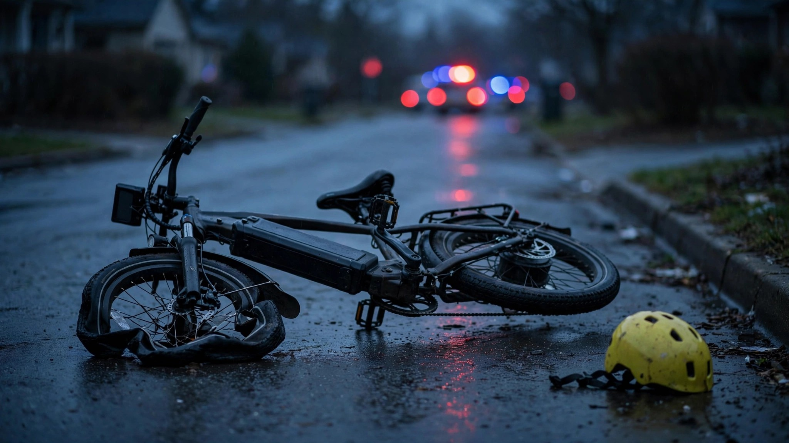

E-Bike Deaths Went From Zero to 97 in Seven Years. The Feds Built No Database.

Ford recalled 565,911 Broncos last week for a wiring harness that caused 15 fire incidents. That is 37,727 recalled vehicles per incident. Meanwhile, e-bikes killed 97 Americans in 2024 alone, sent 149,100 to the emergency room, and triggered zero federal recalls, zero mandatory helmet laws, and zero age restrictions.[1]
CPSC's April 2026 micromobility report laid out the trajectory nobody in Congress is reading. In 2017, the agency recorded zero e-bike deaths in the United States. By 2024, that number hit 97. Over the full eight-year span, e-bikes accounted for 310 of 533 total micromobility deaths, or 58 percent. ER visits quadrupled from 37,300 to 149,100.[1] Not scooter rental mishaps in San Francisco. A national body count climbing at a rate that would trigger congressional hearings if it involved a car brand.
Children are paying the steepest price. New research from Truveta, analyzing over 12,000 ER visits across 30 health systems, found that child and adolescent e-bike and e-scooter injuries surged 7.5-fold between January 2023 and May 2026. A 671 percent increase. More than a third of those kids arrived with head or neck injuries. Seven percent had traumatic brain injuries.[2]
A pediatric study published in Surgery Open Science found that children injured on e-bikes were hospitalized at 2.4 times the rate of kids hurt on regular bicycles (11.5 percent versus 4.8 percent). The most injured age group was 10 to 13. Almost none were wearing helmets.[3]
NHTSA's Fatality Analysis Reporting System recorded 1,392 bicyclist deaths in 2024.[4] Somewhere inside that number are the 97 e-bike deaths CPSC counted separately. That is roughly 7 percent of all cyclist fatalities, hidden in a category that cannot distinguish a kid on a throttle-equipped 28-mph e-bike from a retiree on a three-speed Schwinn. Same code. Same row. Same statistical oblivion. If you want to know whether e-bike deaths are displacing regular cycling deaths or stacking on top of them, FARS cannot help you. Nobody in the federal government can.
Split jurisdiction is the tell. CPSC counts e-bike product deaths but has no authority over traffic behavior. NHTSA counts traffic deaths but does not classify e-bikes as motor vehicles. Neither agency can mandate helmets. Neither can set age minimums. A hospital study of 34,073 micromobility injuries in Illinois found that e-bike riders were 2.4 times more likely to end up in the ICU than conventional cyclists, and 1.3 times more likely to sustain a traumatic brain injury. Nearly half of e-bike injuries came from motor vehicle crashes, not falls.[5]
Health Affairs called it in June: "We have seen versions of this story before: with e-cigarettes, with opioids, with all-terrain vehicles. The pattern repeats. A consumer product reaches the mass market faster than it is regulated, the resulting harm concentrates among adolescents, and the legal system arrives late, scattered, and confused."[3]
Consider the proportionality gap. Ford's 15 Bronco fire incidents generated 565,911 recalls, national press coverage, NHTSA enforcement action, and a free dealer repair program. Ninety-seven e-bike deaths generated a PDF on cpsc.gov. The vehicle category growing fastest in fatalities has the weakest federal response of anything on American roads, and the database that could quantify the problem does not bother to ask the question.
What you should do
If your kid rides an e-bike, buy a MIPS-certified helmet and enforce it every ride. Know your state's e-bike class system (Class 1: pedal-assist to 20 mph; Class 2: throttle to 20 mph; Class 3: pedal-assist to 28 mph). Most states have no age restriction for any class. Several cities do. Check both before handing over a vehicle that weighs 60 pounds and hits 28 mph on flat ground. Your child's hospital admission odds are 2.4 times higher on an e-bike than a regular bicycle. The federal government is not going to tell you that. Now you know.
Sources & References
- U.S. Consumer Product Safety Commission, Micromobility Products-Related Deaths, Injuries, and Hazard Patterns, 2017–2024, April 2026. cpsc.gov
- Truveta Research / USA TODAY, “What’s driving the rise in e-bike injuries among kids and teens?” July 29, 2026. usatoday.com
- Health Affairs Forefront, “When Bicycles Become Motor Vehicles: A Public Health Reckoning For The E-Bike Era,” June 22, 2026. healthaffairs.org
- National Safety Council, Bicycle Deaths — Injury Facts, 2024 data. injuryfacts.nsc.org
- Injuries From Electric Bikes and Scooters: Illinois, U.S., 2021–2023. American Journal of Preventive Medicine, 2025. PMID: 40876518. pubmed.ncbi.nlm.nih.gov